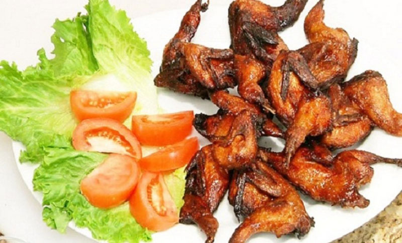

Chim cút nướng tỏi ớt

Các món ăn với chim cút thì rất nhiều người yêu thích như chim cút rô ti, chim cút nấu cháo… Cách làm chim cút nướng tỏi ớt cho buổi tiệc cuối tuần thú vị sẽ giúp bạn ghi điểm trong bữa tiệc nhỏ của gia đình hoặc với bạn bè. Cách làm thì không có gì quá khó, tuy nhiên tất cả đều cần có công thức và cách chế biến riêng để món ăn thêm hoàn hảo. Hãy cùng đến nhà hàng Quá Ngon món chim cút nướng tỏi ớt thơm ngon.